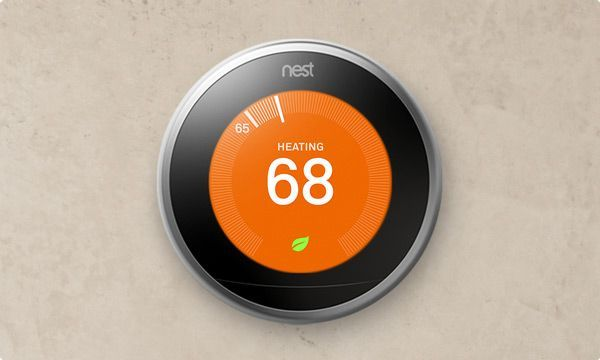

IoT Applications With Example
By Raju -January 30, 2016
Internet of things examples extend from smart connected homes to wearables to healthcare. It is not wrong to suggest that IoT is now becoming part of every aspect of our lives. Not only internet of things applications are enhancing the comforts of our lives but also it giving us more control by simplifying routine work life and personal tasks.
With the recent hype about the future prospects of IoT has forced companies to take the initiative of coming up with basic building blocks of internet of things i.e. hardware, software and support to enable developers deploy applications that can connect anything within scope of internet of things.
We know that the potential of IoT markets is huge but there are some domains that will mature much faster than the rest. Here we list the application areas for the internet of things with examples that have the potential of exponential growth.
- Internet Of Things(IoT) Applications For Connected/Smart Home
- Internet Of Things(IoT) Applications For Wearables
- Internet Of Things(IoT) Applications In Retail
- Internet Of Things(IoT) Applications For Smart Cities
- Internet Of Things(IoT) Applications In Healthcare
- Internet Of Things(IoT) Applications In Agriculture
- Internet of Things(IoT) Applications in Automotive/Transportation
- Internet Of Things(IoT) Applications For Industrial Automation
- Internet Of Things(IoT) Applications Energy Management
IoT Applications For Connected/Smart Home
Definition of connected home is different for different people. In simple words a smart home is the one in which the devices have the capability to communicate with each other as well as to their intangible environment. A smart home gives owner the capability to customize and control home nvironment for increased security and efficient energy management. There are hundreds of IoT technologies available for monitoring and building smart homes.
Consumer product manufacturers like Belkin, Philips, Amazon and Haier have already established themselves as prominent companies in this market. Here are the examples of internet of things for building your own smart homes.
Nest Learning Thermostat
Nest Learning Thermostat is a revolutionary concept which gives you many benefits. Its breakthrough technology and internet of things based concepts make it highly efficient electric appliance. Usually thermostats incur almost half of the energy bills. However with Nest you can save up to 15% on cooling bills as well as 12% on heating bills on average.
What is the real potential of internet of things applications for designing smart homes is aptly projected by Philips Hue. The same hue bulb gives you 600 to 800 color lumens which mean there is a light for every mood of yours. It is compatible with known smart home platforms like HomeKit for Apple iPhone and Amazon Echo.
Based on the community-led air quality sensing network, the Air Quality Egg is a smart sensor system which his designed to track traces of CO and NO2 in the home environment. It is dependent on the participation of community to determine air quality in their environment. It is highly extensible and inexpensive system which can be made from DIY sensors .
Take control of your home with your voice, this is the concept around which Amazon Echo is built. Designed to be highly sensitive listener, Echo has 7 inbuilt microphones to hear you from across the room even among other noises. Get answers, hear news, play music, listen to audio books and integrate to other smart home devices like Philips Hue, Samsung SmartThings and WeMo. It is backed with 360º omni-directional audio.
Wearables are one of the hottest trends in IoT currently. Apple, Samsung, Jawbone and plenty of others all are surviving in a cut throat competition.
Wearable IoT tech is a very large domain and consists of an array of devices . These devices broadly cover the fitness, health and entertainment requirements. The prerequisite from internet of things technology for wearable applications is to be highly energy efficient or ultra-low power and small sized. Here are some top examples of wearable IoT devices that fulfill these requirements.
Charge HR is a high performance IoT wearable which is provided with many smart features. It tracks your heart rate as well as activities sitting on your wrist. It provides you capability to automatically track heart rate, track workouts, monitor sleeping pattern, get call notifications, and synchronize data with your PC and hundreds of Smart Phones wireless and many more.
Internet Of Things(IoT) Applications In healthcare
Healthcare is one sector which is supposed to be highly boosted with advent of internet of things applications. IoT examples in this domain are many.
Philips is one of those tech giants which are making full use of internet of things opportunities available for business. Medication Dispensing Service is one of the most successful IoT healthcare applications from Philips. Focused around elderly patients who find it difficult to maintain their medication dosage on their own, MDS dispenses pre-filled cups as per the scheduled dosage. It notifies automatically when it’s time to take medicine, refill, and malfunctioning or misses dosage.
Agriculture sector needs very institutive as well as highly scalable technology solutions. Internet of things applications can deliver exactly the same to farmers.
Internet of Things(IoT) Applications in Automotive/Transportation
Google’s self driving cars are known to all. IoT is making connected cars a possibility but slowly. It is a well established fact that any new technology takes at least a couple of years to propagate in mainstream automotive industry. This is why there is not such hype around connected internet of things examples. Companies and startups all are announcing innovative technologies to support connected car platforms.
Internet Of Things(IoT) Applications For Industrial Automation
Industrial automation is one of the most profound applications of IoT . With help of internet of things infrastructure backed with advanced sensor networks, wireless connectivity, innovative hardware and machine-to-machine communication, conventional automation process of industries will transform completely. IoT automation solutions for industries from all big names like NEC, Siemens, Emerson and Honeywell are already in the market.
Internet Of Things(IoT) Applications For Energy Management
Power grids of the future will not only be smart enough but also highly reliable. Smart grid concept is becoming very popular. The basic idea behind the smart grids is to collect data in automated fashion and analyze the behavior or electricity consumers and suppliers for improving efficiency as well as economics of electricity use.